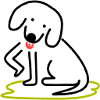

Net Monkey Corporation is an Ohio registered corporation, ostensibly for profit, founded in early 1996; in its long history, Net Monkey has produced no product, made no money, nor done anything except receive calls from telemarketers asking if we would like "Net Monkey" pens made and "Net Monkey" shirts printed up for us. I, Thomas Finley, am either the CEO or the president. I have forgotten which. I am also the only employee.
Leaky Puppy Software was founded as a division of Net Monkey on January 20 2003 when VersionTracker insisted on having a "company name" for the release of Fob. I was just going to release it under my own name, but felt a little weird putting my name in a "company" field. Hence, the Leaky Puppy was born. Isn't he cute? I had loads of fun designing the logo.
I'm from a town called Chagrin Falls, Ohio. I'm currently working on a PhD in computer science at Cornell University; my area of interest is machine learning. I graduated from Duke University in 2002 where I double majored in computer science and math. I have been a Mac user since 1988.
I wrote Fob as an exercise in Cocoa and Objective-C programming. This was my first serious attempt to create a Macintosh software product at least ambiguously suitable for public consumption. As I wrote it largely as a project to teach myself, I have released it as open source under the terms of the GPL in the hope that others can learn.
Fob is free in both the code and monetary sense. As it is about the 100th product to do the exact same thing, it had better be, I suppose.